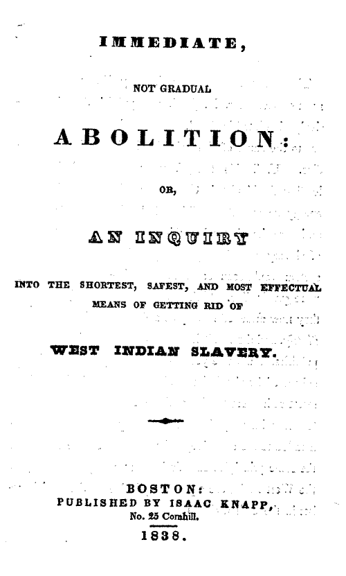

Impact
London and the United States

The transatlantic sisterhood brought British and American women together who pushed abolition in newer and more imaginative ways - many of these connections running directly through London. Elizabeth Heyrick was one of the most influential early voices within this movement, whose 1824 pamphlet 'Immediate, Not Gradual Abolition' called for the immediate end of slavery in the British West Indies and significantly shifted abolitionist thinking in Britain away from cautious gradualism.
What made Heyrick particularly significant in the bigger picture of the transatlantic sisterhood was how widely her message travelled. In 1836, her pamphlet was republished in the United States by the Philadelphia Ladies' Anti-Slavery Society, which believed that Heyrick's arguments were similarly relevant to slavery in the United States. These cases of British and American reading the same texts and sharing strategies evidences how abolitionist ideas circulated between women's networks both in Britain and the Untied States. Rather than acting separately, they were building a connected movement that approached abolition as a shared international responsibility.
Heyrick's emphasis on everyday activism, particularly through consumer boycotts became a model for many women's groups. She campaigned in Leicester to persuade grocers to stop selling slave-produced sugar and encouraged the public to pressure the slave economy through spending choices. Similar tactics to these started to be used by American free‑produce societies, showing how Heyrick's ideas spread across the Atlantic and shaped practical abolitionist work. This approach helped women gain political influence at a time when they were excluded from formal politics.

London served as a key meeting place for many of these transatlantic exchanges. It served as home to the Ladies' London Emancipation Society, which formed in 1863 with the primary goal of supporting the abolition of slavery in the United States. Simultaneously, American activists like Sarah Parker Remond travelled to London to speak publicly against U.S. slavery. Her lectures were widely reported in the London press which helped bring American slavery experiences directly into British public debate and strengthened support for American abolition.
Another major London‑US link came in 1840, when the first World Anti‑Slavery Convention was held in London. This event brought together delegates from across the Atlantic but also helped expose deep gender inequalities. The American women who had travelled to London were refused full participation by the British and Foreign Anti‑Slavery Society. London newspapers covered the controversy, and the incident energised women on both sides of the Atlantic to organise more independently, and these shared experiences of exclusion became a foundation for stronger cooperation rather than division.
The transatlantic sisterhood ultimately created a network which linked London to United States anti‑slavery activism. It achieved this by sharing texts and organisational tactics. Heyrick helped set the moral tone by insisting on immediate emancipation, while women in both London and the U.S. carried these ideas across the Atlantic, turning abolition into a coordinated international effort rooted in moral conviction and collective action.